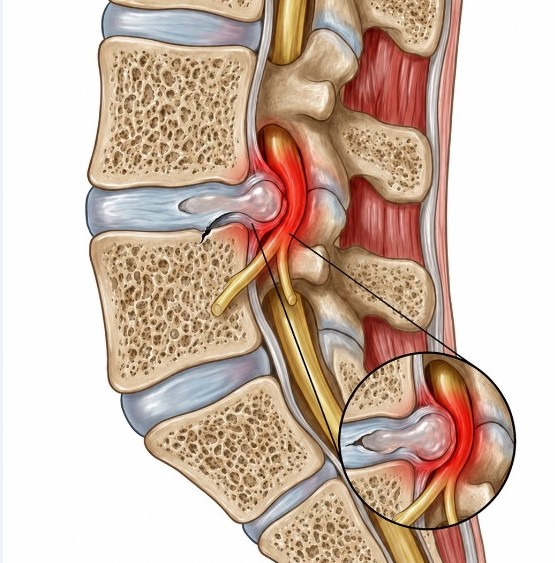
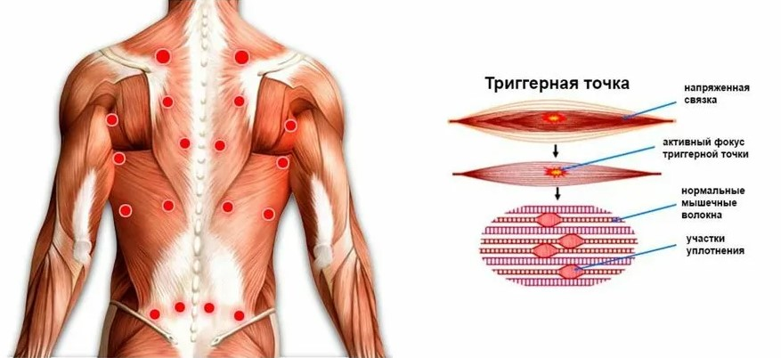

Истинная причина твоей боли
Скорее всего, ты уже прошёл этот круг.
Уколы, блокады, горсти таблеток. Может, тебе уже предложили операцию. Или ты её сделал. А боль либо вернулась через время, либо так и не отпустила до конца.
И ты задаёшь себе вопрос, который мучает каждого: «Почему я всё делаю, как говорят врачи, а лучше не становится?»
Сразу честно: кто я такой
Я не доктор медицинских наук. Я не сидел годами в институте ради корочки, которая даёт право тебя лечить.
Я такой же человек, как ты. С той же грыжей, с той же болью, что простреливала в ногу так, что я думал: останусь инвалидом. Разница в одном. Вместо того чтобы слепо верить, я сел и собрал всю картину по кусочкам. Чтобы понять, в чём причина.
То, что я расскажу, это не теория из учебника. Это то, что я прошёл на себе.
Тебе продали удобную ложь
Тебе сказали: грыжа выдавилась из диска, давит на нерв, отсюда и боль.
Звучит логично. Я сам в это верил. А потом включил простую логику. Включи её и ты.
Грыжа не твёрдая. Это не камень и не кость. Она мягкая, желеобразная. И чтобы такая штука передавила нерв и годами держала адскую боль? Это всё равно что бояться, будто тебя продавит насквозь желе.

Если бы грыжа реально давила на нерв, ноги бы отнялись. А они ходят. Поясницу режет, а нога двигается. Так давит грыжа на нерв или нет?
И главный вопрос. У одного человека грыжа 5 мм, у другого 13 мм. Болит у обоих одинаково. Как 5 мм достаёт до нерва так же, как 13? А если 5 мм уже давит, почему меня с моими 10 мм не парализовало? Я хожу на своих двоих.
Цифры не сходятся. Потому что причина не в грыже.
Где живёт боль
Боль идёт от мышц. От глубоких мышц вдоль позвоночника.
Вот что происходит. Эти мышцы перегружаются и спазмируются: стягиваются и не могут расслабиться. В них появляются плотные болезненные узелки. Спазмированная мышца укорачивается и сама сжимает межпозвоночный диск. Со временем диск пересыхает, и из него выдавливается грыжа.

Улавливаешь? Грыжа не причина. Грыжа следствие. Последствие того, что мышцы годами стянуты в спазме.
А болит сам спазм. Это как судорога в икре, только в спине. Сводит мышцу до слёз. И никакая грыжа тут ни при чём.
Вот почему ничего не помогало
Теперь посмотри новыми глазами на всё, что с тобой делали.
- Укол и блокада глушат боль на время. Спазм они не трогают. Отпустило, и снова вернулось.
- Операция вырезает грыжу, то есть следствие. А причину, стянутые мышцы, не трогает вообще.
Поэтому происходит самое страшное. Вырезал одну грыжу, приходишь за второй, потом за третьей. Мышцы-то остались в спазме, они как тиски сожмут и продавят диск снова.
Я знаю людей, кто сделал операцию, и кто не делал. Через год-два они чувствуют себя одинаково. Вдумайся в это.
Никто не лечил причину. Лечили симптом и брали за это деньги.
Кому-то операция помогла, кому-то нет. Врачи так и говорят: 50 на 50, как повезёт. Почему так? Потому что при вырезании грыжи так или иначе приходится разрезать мышцу, чтобы добраться до позвоночника. Кому-то повезёт, и разрежут мышцу там, где сидели триггерные точки, и станет легче. Кому-то нет, и после операции он не почувствует разницы.
Плюс работает эффект плацебо: самовнушение, что операция обязательно поможет. И этому есть реальное подтверждение. Посмотри видео.
Да, это операция на колене, но при межпозвоночной грыже работает тот же принцип.
Что меняется прямо сейчас
Если ты дочитал, у тебя в голове уже щёлкнуло. Ты перестал гоняться за грыжей и увидел настоящего виновника: мышцы.
И вот хорошая новость, ради которой всё это.
Раз боль держат мышцы, на них можно влиять самому. Дома. Без хирургов, без таблеток, без дорогих процедур. Это не быстро, спина копила спазм годами. Но это реально. Я прошёл это сам.
Как начать снимать боль в домашних условиях, покажу в следующем шаге.
И ещё одно, тихо, на будущее. Ты заметишь: спину «прихватывает» не просто так, а когда наваливается стресс, обида, тревога. Мышцы зажимаются не только от того, что мы мало двигаемся, но и от того, что мы носим в себе. Это и есть настоящий, глубинный корень: почему боль возвращается даже к тем, кто всё делает правильно. Но об этом позже. Сейчас вернём тебе контроль над телом.